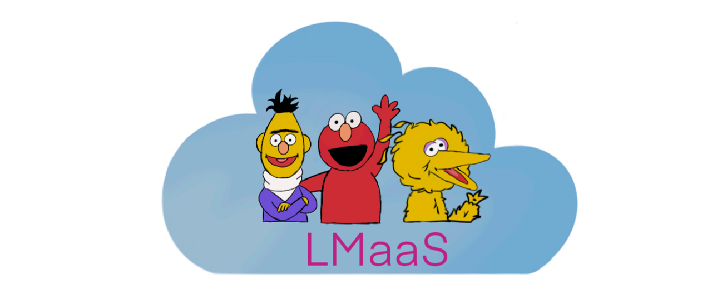

Tianxiang Sun
 |
Tianxiang Sun (孙天祥) |
Research
My main research interests lie in machine learning and its applications for natural language processing. In particular, I am interested in
parameter-efficient learning methods
black-box optimization for large-scale language models
efficient inference for pre-trained models
knowledge-enhanced language understanding
Resources
|  |
|
|
 |
 |
A curated list of Early Exiting papers, benchmarks, and misc. |
Publications
[Google Scholar] [Semantic Scholar] [DBLP]
(*: Equal contribution)
2022
BBTv2: Pure Black-Box Optimization Can Be Comparable to Gradient Descent for Few-Shot Learning
Tianxiang Sun, Zhengfu He, Hong Qian, Xuanjing Huang, Xipeng Qiu.
arXiv: 2205.11200 [pdf][code]
Black-Box Tuning for Language-Model-as-a-Service
Tianxiang Sun, Yunfan Shao, Hong Qian, Xuanjing Huang, Xipeng Qiu.
ICML 2022 (spotlight) [pdf][code][slides]
Paradigm Shift in Natural Language Processing
Tianxiang Sun, Xiangyang Liu, Xipeng Qiu, Xuanjing Huang.
Machine Intelligence Research (Invited Paper) [pdf][website][slides]
Towards Efficient NLP: A Standard Evaluation and A Strong Baseline
Xiangyang Liu*, Tianxiang Sun*, Junliang He, Lingling Wu, Xinyu Zhang, Hao Jiang, Zhao Cao, Xuanjing Huang, Xipeng Qiu.
NAACL 2022 (oral) [pdf][website][code][slides]
A Simple Hash-Based Early Exiting Approach For Language Understanding and Generation
Tianxiang Sun, Xiangyang Liu, Wei Zhu, Zhichao Geng, Lingling Wu, Yilong He, Yuan Ni, Guotong Xie, Xuanjing Huang, Xipeng Qiu.
ACL 2022 (Findings) [pdf][code]
2021
Learning to Teach with Student Feedback
Yitao Liu*, Tianxiang Sun*, Xipeng Qiu, Xuanjing Huang.
arXiv: 2109.04641 [pdf]
Early Exiting with Ensemble Internal Classifiers
Tianxiang Sun, Yunhua Zhou, Xiangyang Liu, Xinyu Zhang, Hao Jiang, Zhao Cao, Xuanjing Huang, Xipeng Qiu.
arXiv: 2105.13792 [pdf]
Accelerating BERT Inference for Sequence Labeling via Early-Exit
Xiaonan Li, Yunfan Shao, Tianxiang Sun, Hang Yan, Xipeng Qiu, Xuanjing Huang.
ACL 2021 [pdf][code]
Does Syntax Matter? A Strong Baseline for Aspect-Based Sentiment Analysis with RoBERTa
Junqi Dai, Hang Yan, Tianxiang Sun, Pengfei Liu, Xipeng Qiu.
NAACL 2021 [pdf][code]
2020
CoLAKE: Contextualized Language and Knowledge Embedding
Tianxiang Sun, Yunfan Shao, Xipeng Qiu, Qipeng Guo, Yaru Hu, Xuanjing Huang, Zheng Zhang.
COLING 2020 [pdf][code][slides]
Pre-trained Models for Natural Language Processing: A Survey
Xipeng Qiu, Tianxiang Sun, Yige Xu, Yunfan Shao, Ning Dai, Xuanjing Huang.
SCIENCE CHINA Technological Sciences (Invited Paper) [pdf]
Learning Sparse Sharing Architectures for Multiple Tasks
Tianxiang Sun*, Yunfan Shao*, Xiaonan Li, Pengfei Liu, Hang Yan, Xipeng Qiu, Xuanjing Huang.
AAAI 2020 (oral) [pdf][code][slides]
Education & Experience
9/2019 - present. Ph.D. student, School of Computer Science, Fudan University.
10/2019 - 8/2020. Applied Scientist Intern, Amazon Shanghai AI Lab. Supervisor: Zheng Zhang.
9/2015 - 6/2019. B.Eng., School of Computer Science and Technology, Xidian University.
Keynotes & Talks
Towards Efficient NLP, at BAAI Big Model Meetup 2021. [video]
Paradigm Shift in NLP, at BAAI LIVE 2021. [video]
CoLAKE: Contextualized Language and Knowledge Embedding, at CSSNLP 2020. [video]
Pre-trained Models and Knowledge, Shanghai, Mar. 2020.
Sparse Sharing, New York City, Feb. 2020.
Implicit Knowledge Base: Pre-trained Language Models, Shanghai, Dec. 2019.
A Brief Introduction to Entity Linking, Shanghai, Nov. 2019.
Services
Conference Reviewer / PC Member
2020: COLING
2021: ACL, EMNLP, AAAI, IJCAI
2022: NeurIPS, ICML, ACL, EMNLP, COLING, AAAI, IJCAI
Honors & Awards
National Scholarship for Graduate Student, Oct. 2020
Outstanding Graduate of Xidian University, Jun. 2019
Honorable Mention in MCM/ICM, Feb. 2018
First Prize in National MCM (Shanxi division), Oct. 2017
Principal Scholarship in School of Computer Science and Technology at XDU (4 times), 2017-2019
First Prize Scholarship of Xidian University (4 times), 2015-2019
First Prize in China High School Biology Olympiad, Jun. 2014